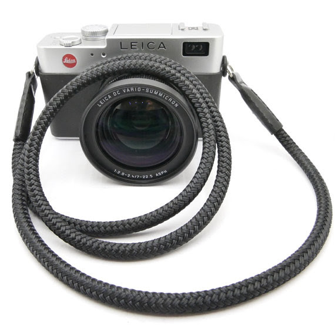

Mi chiamo Luciano e sono un appassionato di fotografia. Mi piace raccontare storie attraverso il bianco e nero, cercando di catturare l'essenza della presenza umana nel mondo che ci circonda.
© 2026 Diario di un fotoreporter